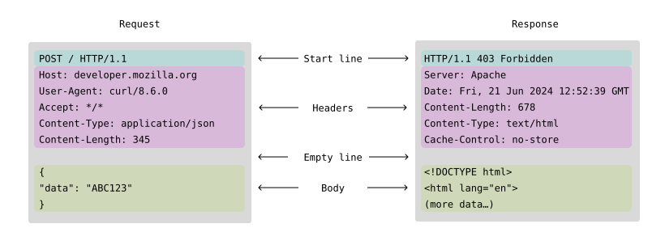
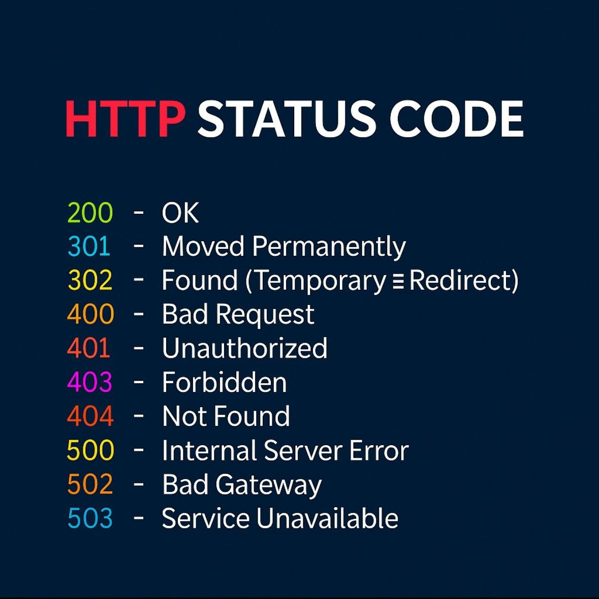
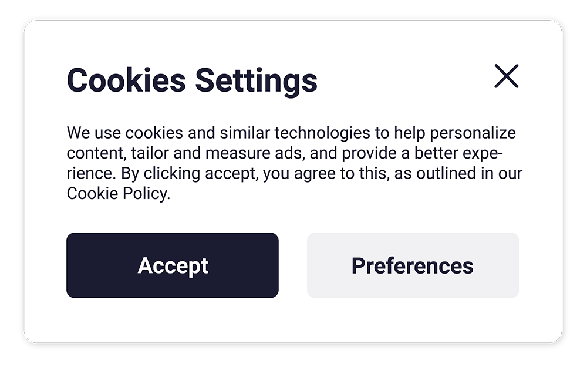
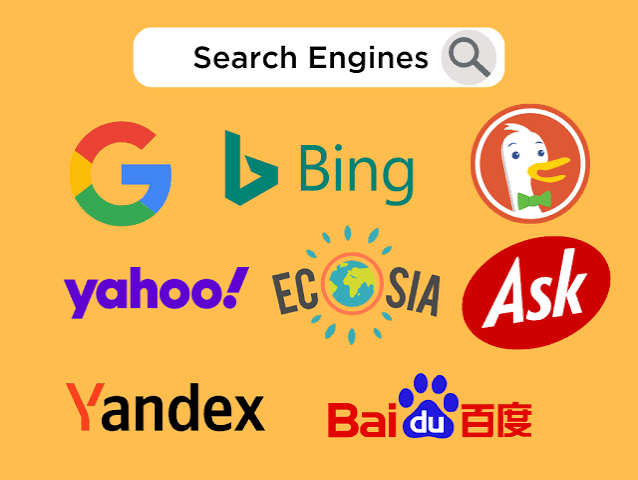

| Concept | Description | Example | Image |
|---|---|---|---|
| URL | A URL (Uniform Resorce Loactor) is way to retrive published pages, documents and images on the web. There are multiple different parts to a URL, which in cludes the donmain name, scheme, and path. | An example of a URL is found when your entering a website name on a search engine (the top part of any web browser). If you type in "www.google.com" into the search bar, that is a URL that will take you to the Google website. | https://www.google.com/ |
| Messages and Requests |
Messages
Requests
|
An example of a message is when you visit a website and the client sends a request to the server to retrieve the webpage. The server then responds with the requested webpage, which is displayed in your browser. |  |
| Status Codes | A communication to indicate whether or not a request has been processed successfully. | The most commonly seen are 200 which means the request was successful and 404 Not Found means the requested page is unavailable or not found. |  |
| Cookies | A cookie is a request for a users information that gets stored in the browser.It usually stores preferences and tracks a users movement on the web. | An example of a cookie is when you visit a website and it asks if you want to save your login information. If you click yes, the website will store a cookie in your browser that remembers your login information for future visits. |  |
| Search Engines | A search engine is a program designed to help users find any information they typed in the the bar. They use "web crawlers" in order to scatter and find websites that are relevant to the users search. | An example of a search engine is Google. When you type a query into Google's search bar, it uses its web crawlers to find and display relevant websites. |  |